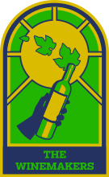
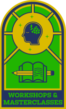

Route A — reworked
The Church of Natural Wine
Back to the sans from your flyer (Figtree), no Vicky, no serif. And A is no longer a quiet brochure: a bigger glowing rose-window hero, real energy from the crowd, bolder type and cooler copy — the church idea, but alive. Tell me if this is the kind of "engaging" you mean, or push it further.
friendly sans · bold name · light everything else
naturalwinefestival.nl
the church of natural wine
natural
wine festival
a'dam
united by wine
Meet the people who grow it. Ask anything. Leave knowing why it tastes different.


once a year, all of amsterdam gathers around the bottle.
60+
makers
300+
living wines
25+
lessons
the order of service
find your window

the makers
60+ growers, pouring 300+ wines. Ask them anything.

the lessons
Soil, sulphur, amphorae — learn from the source.

the supper
An invite-only dinner with the winemakers.
below the hype
it’s not cool. it’s just common sense.
People who farm without chemicals and let the wine reflect the ground it came from — the proverbial canaries in the coal mine of agriculture. We salute them, and we’d like you to meet them.
the supper · invite only
sit at the long table
The winemakers cook and pour alongside the kitchen. Bring your questions.
De Hallen, Amsterdam · 23 November · …and salut.